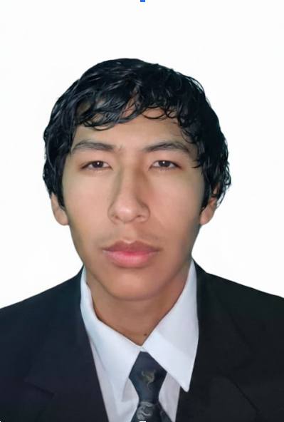

Aldo Erickson Idme Puma
Arequipa, Peru
Aldo Erickson Idme Puma egresado de Tecsup en Desarrollo y Diseno de Software, Estudiante de la Universidad Catolica San Pablo, intersado en tecgnologias moderdas, Start Ups.
Educacion
- Colegio Militar Francisco Bolognesi
- Tecsup - Desarrollo y Diseno de Software (Graduado 2025)
- UCSP - Estudiante de Ciencia de la Computacion
Enlaces oficiales
Tecnologias
Proyectos
- Luka - proyecto universitario de automatizacion de cobro en transporte publico (aplicativo)
- Desarrollo web con HTML y CSS
- APIs y backend basico